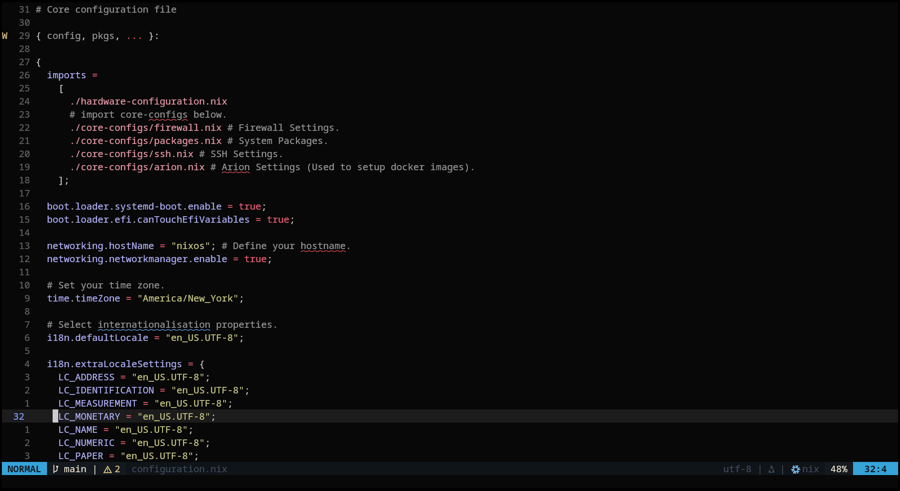

NixOS Server Configuration Template:

When migrating my home server to NixOS, I found a lack of resources online on using NixOS specifically for servers, even though I found many advantages to using NixOS over a traditional Linux distribution. Therefore, I decided to create a server configuration template for NixOS with the goal of making it easier to transition to NixOS and to help beginners create their own configs.